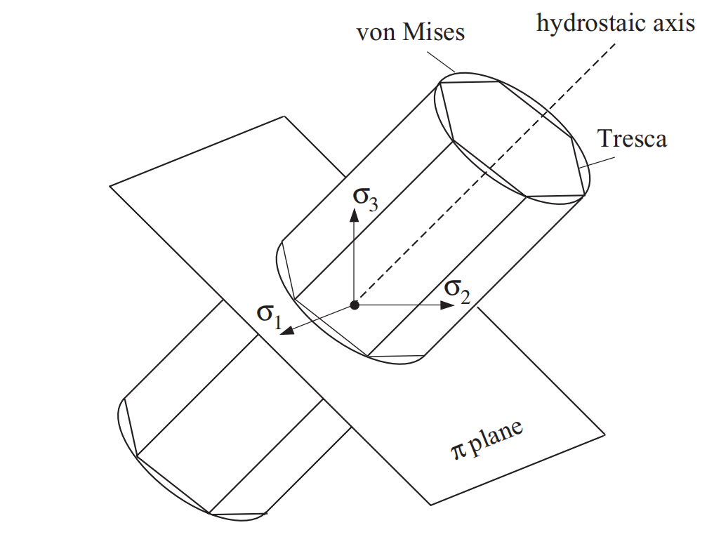

Mises 屈服准则
Mises 屈服准则被称为畸变能密度理论，是最常用的屈服准则之一，属于各向同性屈服准则
Von Mises 屈服准则，也称最大等效应力准则，广泛应用于金属材料的屈服判据。Von Mises 屈服准则认为当某点的应力偏量的第二不变量 \(J_{2}\) 达到某一定值时，材料该点进入塑形状态
\[
\sigma_{\text{mises}} = \sqrt{3J_{2}}=\sqrt{\frac{1}{2}[(\sigma_{1}-\sigma_{2})^{2} + (\sigma_{2}-\sigma_{3})^{2}+(\sigma_{3}-\sigma_{1})^{2}]}\geq\sigma_{y},
\]
\(\sigma_{\text{mises}}\) 也被称为等效应力，\(\sigma_{y}\) 是单轴拉伸下的屈服强度，于是在屈服面上
\[
\sigma_{1}=\sigma_{y},\quad\sigma_{2} = 0,\quad \sigma_{3} = 0,
\]
得到
\[
J_{2} = \frac{\sigma_{y}^2}{3} \quad \Longrightarrow\quad \sqrt{3J_{2}}=\sigma_{y}.
\]
设纯剪切变形下的屈服强度为 \(\tau_{y}\)，于是在屈服面上
\[
\sigma_{1}=\tau_{y},\quad\sigma_{2} = 0,\quad \sigma_{3} = -\tau_{y},
\]
得到
\[
J_{2} = \tau_{y}^{2}\quad \Longrightarrow\quad \sqrt{J_{2}}=\tau_{y},
\]
因此
\[
\sigma_{y} = \sqrt{3}\tau_{y},
\]
这表明，单轴拉伸屈服强度 \(\sigma_{y}\) 与纯剪切屈服强度 \(\tau_{y}\) 的比值为 \(\sqrt{3}\)，这提供了拉伸屈服强度 \(\sigma_{y}\) 和纯剪切屈服强度 \(\tau_{y}\) 的换算关系
Mises 屈服准则与实验数据的吻合度比 Tresca 屈服准则 要好，为了增强对实验数据的拟合能力，可以使用以下推广版本
\[
\left( 1 - c \left(\frac{J_3^2}{J_2^3}\right)^\alpha \right) J_2 = \tau_{y}^2=\frac{\sigma_{y}^{2}}{3},
\]
通常，\(\alpha\) 选为 \(1\)，\(c\) 是某个恰当的参数。然而，由于后续硬化行为的复杂性，使用上式可能需要很高的成本，相比之下，收益极其有限
几何意义
\(\pi\) 平面
\(\pi\) 平面是主应力空间中（\(\sigma_{1},\sigma_{2},\sigma_{3}\)）过原点且法线为等倾线（与主应力方向夹角相同，故方向向量为\((\frac{1}{\sqrt{3}},\frac{1}{\sqrt{3}},\frac{1}{\sqrt{3}})\)）的平面，其方程为
\[
\sigma_{1}+\sigma_{2}+\sigma_{3} = 0,
\]
在该平面上，平均应力（静水压力）为 \(0\)，仅包含偏应力分量，因此 \(\pi\) 平面也称为偏应力平面或等静压力平面。\(\pi\) 平面常用于研究材料屈服行为中与形状改变相关的力学响应
几何意义

Fig. 35 Tresca 屈服准则和 Mises 屈服准则
弹性应变能
单位体积的弹性应变能（弹性应变能密度）表示材料在弹性变形过程中，单位体积内因应力作用而储存的能量
(71)\[\begin{split}
\begin{equation}
\begin{aligned}
W &= \frac{1}{2}\sigma_{ij}\varepsilon_{ij}=\frac{1}{2}(s_{ij}+\frac{1}{3}\delta_{ij}\sigma_{kk})(e_{ij}+\frac{1}{3}\delta_{ij}\varepsilon_{kk})\\
&=\frac{1}{2}[s_{ij}e_{ij}+\frac{1}{3}\delta_{ij}s_{ij}\varepsilon_{kk}+\frac{1}{3}\delta_{ij}e_{ij}\sigma_{kk}+\frac{1}{9}\delta_{ij}\delta_{ij}\sigma_{kk}\varepsilon_{ll}],
\end{aligned}
\end{equation}
\end{split}\]
因为
\[\begin{split}
\begin{equation}
\begin{aligned}
\delta_{ij}s_{ij}\varepsilon_{kk}&=s_{ii}\varepsilon_{kk} = 0,\\
\delta_{ij}e_{ij}\varepsilon_{kk}&=e_{ii}\varepsilon_{kk} = 0,
\end{aligned}
\end{equation}
\end{split}\]
而
\[
\delta_{ij}\delta_{ij}\sigma_{kk}\varepsilon_{ll}=3\sigma_{kk}\varepsilon_{ll},
\]
因此
(72)\[
W = \frac{1}{6}\sigma_{ii}\varepsilon_{jj} + \frac{1}{2}s_{ij}e_{ij} = W_{\text{vol}} + W',
\]
通过分解应力和应变的球量与偏量，弹性应变能 \(W\) 被分解为球量相关的体积变形（膨胀或压缩）和偏张量相关的剪切部分（畸变能）
根据广义胡克定律
\[
\sigma_{ij}=\lambda\delta_{ij}\varepsilon_{kk}+2\mu\varepsilon_{ij},
\]
其中 \(\lambda\) 和 \(\mu\) 为拉梅常数，代入应变分解 \(\varepsilon_{ij} = \frac{1}{3}\delta_{ij}\varepsilon_{kk}+e_{ij}\) 到上式
\[\begin{split}
\begin{equation}
\begin{aligned}
\sigma_{ij}&=\lambda\delta_{ij}\varepsilon_{kk}+2\mu(\frac{1}{3}\delta_{ij}\varepsilon_{kk}+e_{ij})\\
&=(\lambda+\frac{2}{3}\mu)\delta_{ij}\varepsilon_{kk}+2\mu e_{ij},
\end{aligned}
\end{equation}
\end{split}\]
对比应力分解 \(\sigma_{ij}=\frac{1}{3}\delta_{ij}\sigma_{kk}+s_{ij}\)，当 \(i\neq j\) 时，有
\[
s_{ij} = 2\mu e_{ij},
\]
当 \(i=j\) 时
\[
\sigma_{ii}=(\lambda+\frac{2}{3}\mu)\varepsilon_{kk}+2\mu e_{ii} = \frac{1}{3}\sigma_{kk} + s_{ii},
\]
上式对 \(i\) 求和，并记 \(\sigma_{\text{vol}}=\sigma_{kk}\) 和 \(\varepsilon_{\text{vol}}=\varepsilon_{kk}\)，得到
\[
3(\lambda+\frac{2}{3}\mu)\varepsilon_{\text{vol}} = \frac{3}{3}\sigma_{\text{vol}} \Longrightarrow (\lambda+\frac{2}{3}\mu)\varepsilon_{\text{vol}} = \frac{1}{3}\sigma_{\text{vol}},
\]
定义体积模量
\[
K = \lambda+\frac{2}{3}\mu \Longrightarrow K\varepsilon_{\text{vol}} = \frac{1}{3}\sigma_{\text{vol}}.
\]
另一方面，这也得到 \(s_{ij}=2\mu e_{ij}\) 对 \(i=j\) 也成立，因此
\[
s_{ij} = 2\mu e_{ij}
\]
因此畸变能为
\[
W' = \frac{1}{2}s_{ij}e_{ij} = \frac{1}{4\mu}s_{ij}s_{ij} = \frac{1}{2\mu}J_{2}=\frac{\sigma_{y}^2}{6\mu}=\frac{\tau_{y}^2}{2\mu},
\]
因此，Von Mises 准则可以被解释为：当畸变能 \(W'\) 达到临界值 \(\frac{\sigma_{y}^2}{6\mu}\) 或 \(\frac{\tau_{y}^2}{2\mu}\) 时，材料开始屈服
因此，Von Mises 准则也被称为畸变能密度理论
八面体剪切应力
八面体平面是一个与三个主应力方向成等角的平面，这种对称性使得它成为分析材料在复杂应力状态下剪切应力的一个平均代表
每个主应力轴有两个选取方向，因此一共能产生八个平面，形成八面体，故称为八面体平面
八面体平面法向量为
\[
\mathbf{n} = \pm\frac{\sqrt{3}}{3}(\mathbf{n}_{1}+\mathbf{n}_{2}+\mathbf{n}_{3}),
\]
\(\mathbf{n}_{i}\) 表示主应力 \(\sigma_{i}\) 的方向的单位向量，即特征值 \(\sigma_{i}\) 对应的单位特征向量，显然有 \(\mathbf{n}\cdot \mathbf{n}_{i} = \pm\frac{\sqrt{3}}{3}\)
根据应力张量矩阵的谱分解
\[\begin{split}
\begin{equation}
\begin{aligned}
\boldsymbol{\sigma}
&=\begin{bmatrix}
\mathbf{n}_{1} & \mathbf{n}_{2} & \mathbf{n}_{3}
\end{bmatrix}
\begin{bmatrix}
\sigma_{1} & & \\ & \sigma_{2} & \\ & & \sigma_{3}
\end{bmatrix}
\begin{bmatrix}
\mathbf{n}_{1}^{T} \\ \mathbf{n}_{2}^{T} \\ \mathbf{n}_{3}^{T}
\end{bmatrix}\\
&=\sigma_{1}\mathbf{n}_{1}\mathbf{n}_{1}^{T} + \sigma_{2}\mathbf{n}_{2}\mathbf{n}_{2}^{T} + \sigma_{3}\mathbf{n}_{3}\mathbf{n}_{3}^{T},
\end{aligned}
\end{equation}
\end{split}\]
于是八面体平面上的应力为
\[
\mathbf{t}_{\mathbf{n}} = \boldsymbol{\sigma}\mathbf{n} = \pm\frac{\sqrt{3}}{3}(\sigma_{1}\mathbf{n}_{1} + \sigma_{2}\mathbf{n}_{2} + \sigma_{3}\mathbf{n}_{3}),
\]
正应力为
\[
\sigma_{\mathbf{n}} = \mathbf{t}_{\mathbf{n}}\cdot\mathbf{n} = \frac{1}{3}(\sigma_{1} + \sigma_{2} + \sigma_{3}),
\]
切应力为
\[\begin{split}
\begin{equation}
\begin{aligned}
\tau_{\mathbf{n}} &= \sqrt{|\mathbf{t}_{\mathbf{n}}|^{2} - \sigma_{\mathbf{n}}^{2}}\\
&= \frac{1}{3}\sqrt{(\sigma_{1}-\sigma_{2})^{2} + (\sigma_{2}-\sigma_{3})^{2} + (\sigma_{3}-\sigma_{1})^{2}}\\
&= \sqrt{\frac{2}{3}J_{2}}
= \frac{\sqrt{2}}{3}\sigma_{y} = \frac{\sqrt{2}}{\sqrt{3}}\tau_{y},
\end{aligned}
\end{equation}
\end{split}\]
因此，Von Mises 准则可以被解释为：当材料中所有可能平面上的平均剪应力达到临界值 \(\frac{\sqrt{2}}{3}\sigma_{y}\) 或 \(\frac{\sqrt{2}}{\sqrt{3}}\tau_{y}\) 时，材料开始屈服
{kind=link}